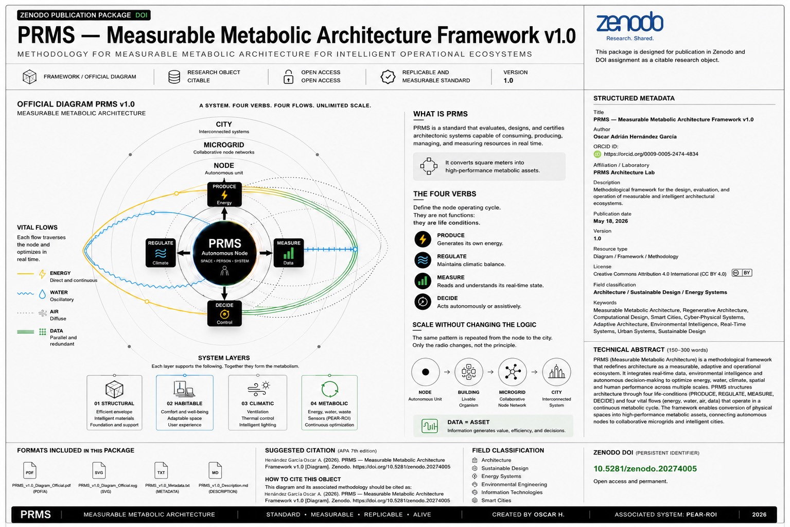

VISUAL RESEARCH UNIT
System
Atlas
Visual frameworks, operational diagrams and measurable metabolic systems developed within the PRMS Architecture Lab.
OFFICIAL FRAMEWORK DIAGRAM
The PRMS Official Diagram synthesizes the operational logic of measurable metabolic architecture into a scalable visual framework. It defines the relationship between autonomous nodes, vital flows, system layers, and distributed intelligence across multiple scales — from individual units to interconnected urban systems.
